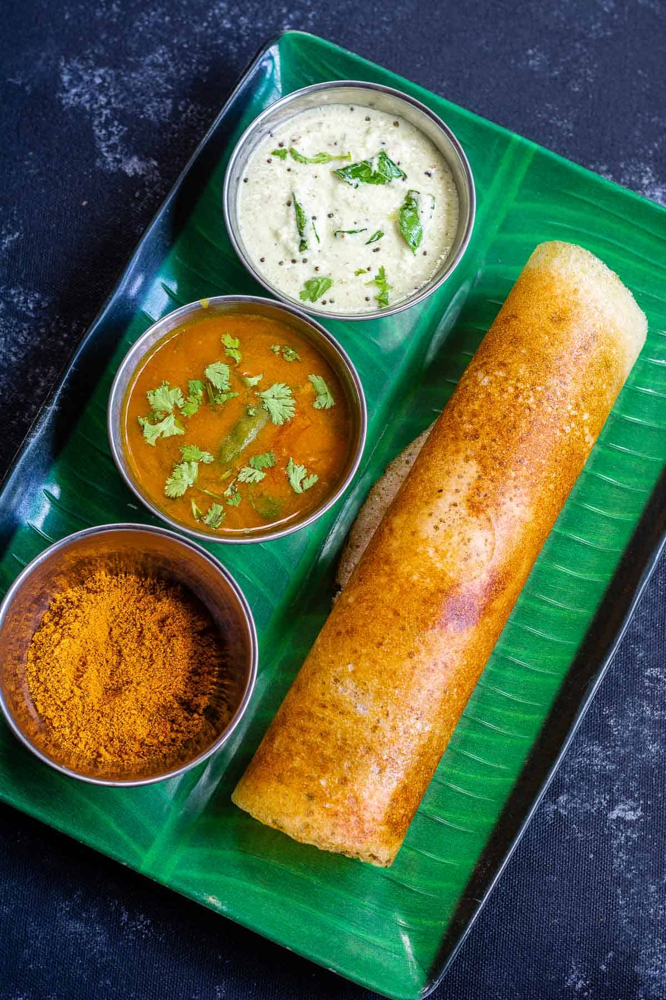

tamilnadu special idly sambar
Tamilnadu cuisine, with its rich tapestry of flavors and traditions, offers a delightful gastronomic experience, and at the heart of this culinary treasure is the iconic Idli Sambar. This dish is more than just food; it reflects the region’s culture, history, and way of life. Idli Sambar combines two of South India’s most beloved staples. The region, known for its extensive use of rice and lentils, has made the most of these ingredients in creating this dish. While South Indian cuisine offers many delicacies, from crispy dosas to spicy curries, Idli Sambar stands out for its simplicity yet profound flavors. It’s a testament to the culinary wisdom of the region, where ingredients transform into nutritious and flavorful dishes.Idli is the favourite of many of us all over India. It is prepared by steaming a fermented combination of rice and lentils. This traditional breakfast staple is loaded with health benefits because the fermentation process breaks down its chief components and makes the minerals more bioavailable. Normally, this five-ingredient dish is served with sambar, curries, and other chutneys. Well, no meal with idli is complete without a bowl of sambar on the side.
kerala special mambazha kuzhambu
Mambazha Mor Kuzhambu is a delicious mango curry made from ripe mangoes simmered in a delicious coconut and yogurt based gravy. The Mor Kuzhambu is also popularly known as Pulissery in Kerala and is often made with a variety of vegetables like ripe bananas, ash gourd, capsicum, drumstick, lady's finger and carrots used either just as one vegetable or as a combination of 2 vegetables. Serve Mambazha Mor Kuzhambu Recipe along with Steamed Rice, Chow Chow Thoran and Elai Vadam for a weekday meal.Mambazha Kuzhambu is a delicious south Indian dal that celebrates the glory of ripe mangoes. With its perfect balance of tangy, sweet and spicy notes, this lentil-based curry is summer in a bowl. Get ready for an explosion of vibrant flavors.Mambazha Mor Kuzhambu is a sweet and spicy ripe mango cooked in the spicy yogurt sauce. It's one of my childhood favorite. My mom used to make this during mango season. You don't feel the sweetness of the mango in the kuzhambu as the sweetness will be removed when you boil the mango. But you can very much identify the mango flavor in the kuzhambu.
karnataka special masala dosa
A popular South Indian dish, dosa is a delicious comfort food that you can eat in any given course of food. It is light on the stomach, easy and quick to cook. Though its origin lies in Udupi, Karnataka but it is loved and savored all over the country and across the world as well. Dosa has had many variations over time but the most popular remains the plain dosa and masala dosa. You can have dosa for breakfast, brunch, lunch or even dinner since it is easily digestible, low on calories and extremely appetizing!Masala Dosa, a thin and crispy South Indian crepe made from rice and dal batter, has become a global culinary sensation. Unlike plain dosa, Masala Dosa Recipe features a spicy potato filling, creating a delightful combination of textures and flavors.the basic recipe typically starts with a fermented batter of parboiled rice, poha, and various legumes (black gram, pigeon peas, chickpeas), and incorporates various spices for flavour, such as fenugreek and dry red chilli. Traditionally served with potato curry, chutneys, and sambar, it is a common breakfast item in South India, though it can also be found in many other parts of the country and overseas. One common variant is the paper masala dosa, which is made with a thinner batter, resulting in a crisper, almost paper-thin final product.